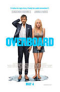
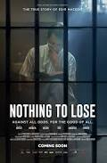

Conoce nuestra gran variedad de peliculas
DeadPool
País: Estados Unidos. Año:2018
Género: Comedia, acción y cine fantástico. Clasificacion: R
En Deadpool 2 nuestro protagonista Deadpool (Ryan Reynolds) debe proteger a un joven mutante (Julian Dennison), perseguido por Cable (Josh Brolin), un soldado mutante con un brazo mecánico y que puede viajar en el tiempo. Para vencer a Cable, Deadpool reúne a un grupo de mutantes con superpoderes llamado X-Force, entre los que figura Domino (Zazie Beetz) y Bedlam (Terry Crews), entre otros.

Reservación
Reservación
Hombre al Agua
País: Mexico. Año:2018
Género: Comedia. Clasificacion: B Duracion: 113 min.
Leonardo (EUGENIO DERBEZ) es un playboy perteneciente a la familia más rica de México y Kate (ANNA FARIS), una madre soltera de clase media. Kate es contratada para limpiar el yate de Leonardo, pero este la despide injustamente y se niega a pagarle. Esa misma noche, Leonardo cae al mar y despierta con amnesia en un pequeño pueblo de Oregon. Cuando Kate se entera, aparece en el hospital diciendo que es su esposa y lo pone a trabajar por primera vez en su vida. Aunque al principio es miserable e inepto, poco a poco va ganándose el cariño de su nueva familia y de sus compañeros de trabajo.
Infinity War
País: Estados Unidos. Año:2018
Género: Acción y cine fantástico. Clasificacion: R
Los superhéroes se alían para vencer al poderoso Thanos, el peor enemigo al que se han enfrentado. Si Thanos logra reunir las seis gemas del infinito: poder, tiempo, alma, realidad, mente y espacio, nadie podrá detenerlo.
El Ritual
País: Reino Unido. Año:2017
Género: Terror Clasificacion: B15. Duracion: 94 min.
Cuatro antiguos amigos deciden reunirse para recordar sus tiempos en la universidad. Su destino es una pequeña cabaña en un bosque escandinavo, pero pronto surgen las disputas entre ellos por lo mucho que han cambiado. Sin embargo, lo realmente importante que hay algo al acecho que amenaza con acabar con sus vidas, encontrando además restos de un antiguo ritual pagano...
Pablo Apostol
Género: Drama. Clasificacion: B15. Duracion: 106 min.
Una emocionante y épica historia del hombre que persiguió a la iglesia primitiva y luego se convirtió en su más grande defensor. Pablo, conocido antes como Saulo de Tarso, se convirtió en el cristianismo mientras viajaba en el camino de Jerusalén a Damasco en una misión para arrestar a los cristianos, hasta que Jesús resucitado se le apareció y quedo ciego por tres días. En el elenco de la tan esperada película se destaca el actor Jim Caviezel, quien protagonizó el largometraje "La Pasión de Cristo", y en esta cinta dará vida al apóstol Lucas; mientras que el Apóstol Pablo será interpretado por James Faulkner. La cinta muestra a Pablo y su radical transformación del más vil perseguidor de los cristianos, al apóstol más influyente de Jesucristo. La película presenta sus últimos días, en una prisión en Roma, debilitado fisicamente y en espera de su sentencia de muerte por el emperador Nerón. Mientras que el empecinado prefecto de la prisión de Mamertina, busca entender cómo ese viejo hombre puede representar una amenaza. La película cuenta los desafíos y luchas que enfrenta Pablo, quien escribe cartas a las comunidades cristianas desde la cárcel para alentar a los creyentes a permanecer fuertes en su fe contra la persección romana; así como Lucas quien se esfuerza en proclamar y vivir el evangelio de Jesucristo.
La Cena
País: Estados Unidos. Año:2017
Género: Drama y Suspenso. Clasificacion: B 15
En un lujososo restaurante tiene lugar una cena, a primera vista, diplomática, entre dos parejas adultas. Uno de los matrimonios está formado por Paul (Steve Coogan) y Claire (Laura Linney), y el otro por Stan (Richard Gere) y Katelyn (Rebecca Hall). Ellos dos son hermanos. A medida que avanza la cena, los comensales pierden sus inhibiciones y modales con el fin de salvaguardar la inocencia de sus respectivos hijos, acusados de un grave delito. Los secretos y revelaciones de los cuatro comensales desembocarán en un acto inesperado que sacudirá sus vidas. ¿Hasta dónde es capaz de llegar un padre para encubrir a un hijo que comete un delito injustificable?
Gringo
País: Estados Unidos. Año:2018
Género: Thiller. Clasificacion: B15
Un empresario estadounidense se mete en un grave problema en México cuando se ve inmerso en los asuntos de un narcotraficante local y de un grupo de mercenarios contratados por el Gobierno.

Reservación
Reservación
Nada que perder
País: Brasil. Año:2018
Género: Drama. Duracion: 134 min. Clasificacion: A
Basada en hechos reales, Nada que perder revela los episodios que marcaron la vida del Obispo Edir Macedo, un hombre que enfrentó el poder público, rompió con los paradigmas religiosos de Brasil y se convirtió en uno de sus mayores líderes, fundando la Iglesia Universal del Reino de Dios. La historia del país en los años 60, 70, 80 y 90 es telón de fondo para su trayectoria, siempre rodeada de momentos difíciles, polémicos y controvertidos, como su encarcelamiento en 1992, en Sao Paulo.

Gnomos al ataque
País: España. Año:2017
Género: Animacion. Duracion:85 min. Clasificacion: A
Chloe y su madre se ven obligadas a mudarse a una casa con gnomos en el jardín. Chloe y su amigo Liam pronto descubren que la casa esconde algo: los gnomos están vivos. Durante años han estado protegiendo al planeta de unas criaturas llamadas Troggs, que han invadido la casa a través de un portal de otro mundo. Chloe y Liam tendrán que unir fuerzas con los gnomos para luchar contra los Troggs y salvar el mundo.
Pesadilla Siniestra
País: Estados Unidos. Año:2017
Género: Terror. Duracion: 84 min. Clasificacion: B15
En Deadpool 2 nuestro protagonista Deadpool (Ryan Reynolds) debe proteger a un joven mutante (Julian Dennison), perseguido por Cable (Josh Brolin), un soldado mutante con un brazo mecánico y que puede viajar en el tiempo. Para vencer a Cable, Deadpool reúne a un grupo de mutantes con superpoderes llamado X-Force, entre los que figura Domino (Zazie Beetz) y Bedlam (Terry Crews), entre otros.